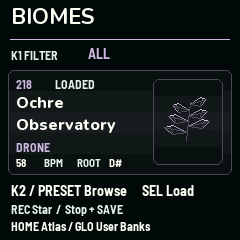

Find a place to start.
A Biome holds the sounds, patterns, effects and modulation for the whole instrument.
- Press HOME until Biomes appears. K1 filters by family or Favorites.
- Turn K2 or PRESET to browse. Press SEL to load, then PLAY.
- Try the four Live Atlas macros. Use REC in the browser view on the FM-1 to mark a favorite, then stop and SAVE to keep it.